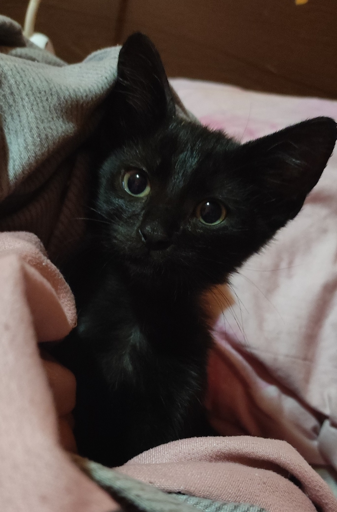

| Numele animalului |
Poza animalului |
Descrierea animalului |
Data postarii |
Autor |
| Lucy |
|
Este foarte blanda si ascultatoare. |
22 August 2023 |
Ion Aldica |
| Daisy |
|
Este jucausa, iubitoare, o micuta luptatoare si asteapta un om care sa-i ofere o casuta |
21 August 2023 |
Gavril Iancu |
| Aki |
|
Are aproximativ 1 an, este foarte jucaus si prietenos, si vreau sa cred ca nu a fost aruncat de bunavoie. |
24 August 2023 |
Johana Miron |
| Rookie |
|
Rookie este un catel de talie medie, foarte jucaus si plin de energie. Cel mai mult ii place sa alerge,
asa ca daca Rookie este alegerea dumneavoastra, asigura-ti-va ca aveti destul timp pentru a-l scoate la
plimbari dese.
|
20 August 2023 |
Ioana Travita |
| Charlie |
 |
Are aproximativ o luna, este foarte sanatos, majoritatea oamenilor nu vor un pisic negru pentru ca "aduc ghinion",
singurul ghinion pe care il va aduce acest micut in casa dumneavoasta o sa fie- ghinionul de a fi tot timpul fericit.
|
27 August 2023 |
Roxana Ionita |
| Cecy |
 |
Cecy este o pisica foarte draguta si calma. Doarme foarte mult. |
20 August 2023 |
Maria Lauta |
| Cora |
|
Catelusa talie foarte mica, prietenoasa. Este gestanta. |
1 Septembrie 2023 |
Ioan Mihalache |